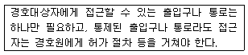
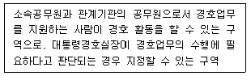
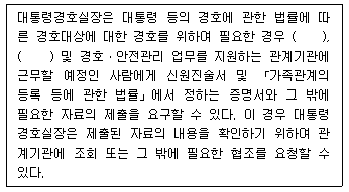
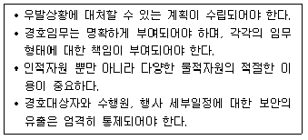
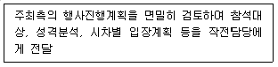
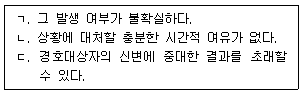
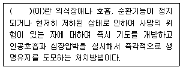

경비지도사-2차(경호학) (2015-11-21 기출문제)
1. 형식적 의미의 경호개념에 관한 설명으로 옳은 것은?
- 경호주체가 국가, 민간에 관계없이 경호대상자를 보호하는 모든 활동을 말한다.
- 경호의 개념을 본질적ㆍ이론적 입장에서 이해한 것이다.
- 현실적인 경호기관을 기준으로 정립된 개념이다.
- 학문적 측면에서 고찰된 개념이다.
(정답률: 82%)

2. 장소에 의한 경호의 분류가 아닌 것은?
- 연도경호
- 숙소경호
- 선발경호
- 행사장경호
(정답률: 94%)
3. 경호수준에 의한 분류 중 사전경호조치가 전무한 상황 하의 각종행사 시의 경호는?
- 1(A)급 경호
- 2(B)급 경호
- 3(C)급 경호
- 4(D)급 경호
(정답률: 78%)
4. 공경호와 민간경호의 특성에 관한 설명으로 옳지 않은 것은?
- 공경호는 경호대상이 관련법규에 근거하고, 민간경호는 의뢰인과의 계약에 의해 정해진다.
- 경호조직의 운영에 있어 공경호는 폐쇄성ㆍ보안성ㆍ기동성의 특성을 가지나, 민간경호는 이러한 특성을 갖지 않는다.
- 공경호는 국가기관에 의해 행해지는 경호활동이고, 민간경호는 민간에 의해 행해지는 경호활동이다.
- 공경호는 국가요인의 신변보호를 통해 국가안전에 기여하며, 민간경호는 의뢰인에 대한 안전 보장을 통해 영리를 추구한다.
(정답률: 94%)
5. 3중 경호의 원리에 관한 설명으로 옳지 않은 것은?
- 경호영향권역을 공간적으로 구분한 3중의 경호막을 통해 구역별로 동등한 경호 조치로 위해요소에 대한 중첩확인이 이루어진다.
- 세계의 주요 경호기관이 3중 경호의 원리를 적용하고 있으나 적용범위와 방법 등에서는 차이가 존재한다.
- 안전구역은 완벽한 통제가 이루어져야 하며, 경호원의 확인을 거치지 않은 인원의 출입은 금지한다.
- 위해행위에 대한 조기경보체제를 확립하고 경호자원과 시간을 효율적으로 활용할 수 있는 여건을 제공한다.
(정답률: 80%)
6. 다음에서 설명하고 있는 경호활동의 원칙은?

- 3중 경호의 원칙
- 방어경호의 원칙
- 은밀경호의 원칙
- 하나의 통제된 지점을 통한 접근의 원칙
(정답률: 93%)
7. 조선시대의 경호관련기관이 아닌 것은?
- 내금위
- 겸사복
- 도방
- 호위청
(정답률: 87%)
8. 경호의 기본원리 및 경호기법에 관한 설명으로 옳지 않은 것은?
- 위해기도자의 위치가 고정된 경우, 수평적 방벽효과는 경호원이 위해기도자와 가까이 위치할수록 감소한다.
- 위해기도 시 위해기도자와 가장 가까이 위치한 경호원이 위해기도자를 대적한다.
- 위력경호는 위해기도자의 위해기도 의사를 제압할 수 있는 유형적ㆍ무형적 힘을 이용한다.
- 위해기도 시 경호대상자를 방호해야 하는 경호원은 위해기도자의 공격선상에서 최대한 몸을 크게 벌려 공격을 막는다.
(정답률: 87%)
9. 대한민국정부 수립 이후 경호제도의 변천에 관한 설명으로 옳지 않은 것은?
- 1949년에는 그동안 구왕궁을 관할하고 있던 경복궁경찰대가 폐지되고 경무대경찰서가 신설되었다.
- 1960년에는 청와대경찰관파견대가 대통령 경호 및 대통령관저의 경비를 담당하였다.
- 1961년에는 군사혁명위원회가 국가재건최고회의로 발족되면서 국가재건최고회의 의장경호대가 임시로 편성되었다.
- 1963년에는 박정희 대통령이 취임하면서 대통령경호실이 출범하였다.
(정답률: 84%)
10. 대통령 등의 경호에 관한 법률의 내용으로 옳지 않은 것은?
- 5급 이상 경호공무원은 대통령경호실장의 제청으로 대통령이 임용한다.
- 임용권자는 직원(별정직 국가공무원은 제외)이 신체적ㆍ정신적 이상으로 6개월 이상 직무를 수행하지 못할 만한 지장이 있으면 직권으로 면직할 수 있다.
- 5급 이상 경호공무원의 정년은 58세이고, 6급 이하 경호공무원의 정년은 55세이다.
- 대통령경호실장의 제청으로 서울중앙지방검찰청 검사장이 지명한 경호공무원은 일반범죄에 대하여 수사상 긴급을 요하는 한도 내에서 사법경찰관리의 직무를 수행할 수 있다.
(정답률: 84%)
11. 대통령 등의 경호에 관한 법령상 다음에서 설명하는 구역은?

- 안전구역
- 경비구역
- 경호구역
- 통제구역
(정답률: 89%)
12. 대통령 등의 경호에 관한 법령상 대통령경호안전대책위원회에 관한 설명으로 옳지 않은 것은?
- 대통령경호실의 경호대상에 대한 경호업무를 수행할 때에는 관계기관의 책임을 명확하게 하고, 협조를 원활하게 하기 위하여 비서실에 대통령경호안전대책위원회를 둔다.
- 대통령경호안전대책위원회는 위원장과 부위원장 각 1명을 포함한 20명 이내의 위원으로 구성한다.
- 위원장은 실장이 되고, 부위원장은 차장이 되며, 위원은 대통령령으로 정하는 관계기관의 공무원이 된다.
- 대통령경호안전대책위원회는 대통령 경호와 관련된 첩보ㆍ정보의 교환 및 분석업무를 관장한다.
(정답률: 83%)
13. 대통령경호안전대책위원회규정상 대통령경호안전대책위원회의 위원이 아닌 자는?(관련 규정 개정전 문제로 여기서는 기존 정답인 2번을 누르면 정답 처리됩니다. 자세한 내용은 해설을 참고하세요.)
- 법무부 출입국ㆍ외국인정책본부장
- 경찰청 경비국장
- 국토교통부 항공정책관
- 국방부 조사본부장
(정답률: 62%)
14. 대통령 등의 경호에 관한 법령상 다음 ( )안에 들어갈 내용으로 옳은 것은?

- 대통령비서실, 국가안보실
- 대통령비서실, 국방부 조사본부실
- 대검찰청 공안기획실, 국가안보실
- 대검찰청 공안기획실, 국방부 조사본부실
(정답률: 93%)
15. 경호조직의 조직구조와 운영에 관한 설명으로 옳은 것은?
- 경호조직은 모든 동원요소가 최상의 기능을 발휘할 수 있도록 수직적 구조가 아닌 수평적 구조를 이루어야 한다.
- 경호조직은 단위조직, 권한과 책임 등이 경호업무의 목적달성에 잘 기여할 수 있도록 통합되어야 한다.
- 경호조직의 권위는 권력의 힘에 의존하는 데에서 탈피하여 경호의 전문성에서 찾아야 한다.
- 현대 경호조직은 과거와 비교하여 규모가 축소되고 있다.
(정답률: 80%)
16. 하나의 경호조직이 단독으로 경호임무 수행에 필요한 모든 정보활동을 수행 할 수 없다는 특성과 가장 관련있는 경호조직의 특성은?
- 기동성
- 보안성
- 통합성
- 협력성
(정답률: 90%)
17. 다음 중 신분상 성격이 다른 것은?
- 대통령경호실 직원
- 신변보호업무를 수행하는 일반경비원
- 헌병
- 경찰공무원
(정답률: 89%)
18. 경호작용의 기본요소에 관한 설명으로 옳은 것은 모두 몇 개인가?

- 1개
- 2개
- 3개
- 4개
(정답률: 90%)
19. 경호작용 중 위협평가(위해평가)에 관한 설명으로 옳지 않은 것은?
- 모든 수준의 위협으로부터 경호대상자를 경호하려는 시도는 효과적이지도 않고 능률적이지도 않기 때문에 위협평가가 선행되어야 한다.
- 위협의 실체를 정확히 인식하고 가용자원의 효율적인 분배를 통하여 불필요한 인력과 자원의 낭비를 최소화하기 위함이다.
- 경호대상자는 위협평가 후 경호대안 수립에 있어 자신이 경호업무의 일부분이 되어야 한다는 점을 인식할 필요는 없다.
- 보이지 않는 적의 실체를 파악하여 그에 대한 경호방책을 강구하기 위한 첫걸음이다.
(정답률: 90%)
20. 경호활동을 ‘예방-대비-대응-평가’의 4단계로 분류할 경우, 대응단계의 활동에 해당하지 않는 것은?
- 모든 출입요소에 대한 통제 및 경계
- 정보의 수집 및 생산
- 기동경호
- 근접경호
(정답률: 86%)
21. 선발경호 시 다음의 업무를 수행하는 담당은?

- 승ㆍ하차 및 정문 담당
- 안전대책 담당
- 주 행사장 담당
- 출입통제 담당
(정답률: 72%)
22. 선발경호의 목적으로 옳지 않은 것은?
- 발생한 위험에 대응하여 경호대상자를 보호한다.
- 우발상황에 대응하기 위한 비상대책을 강구한다.
- 사전에 각종 위해요소를 제거하거나 최소화한다.
- 행사지역의 경호관련 정보를 수집ㆍ제공한다.
(정답률: 87%)
23. 차량경호업무 내용으로 옳지 않은 것은?
- 차량이동 시 속도를 평상시보다 빠르게 하는 것이 경호에 유리한 여건을 조성한다.
- 차량이 하차지점에 도착하면 제일 먼저 차량 문을 개방하여 경호대상자가 하차 하도록 해야 한다.
- 경호책임자는 경호대상자 승ㆍ하차시 차량 문의 개폐와 잠금장치를 통제한다.
- 운전요원은 경호대상자가 하차 후 안전한 곳으로 이동시까지 차량에 대기해야한다.
(정답률: 93%)
24. 사주경계에 관한 설명으로 옳지 않은 것은?
- 행사 상황이나 분위기에 어울리지 않는 복장을 착용하거나 수상한 행동을 하는 사람을 중점 감시한다.
- 사주경계의 대상은 인적ㆍ물적ㆍ지리적 취약요소를 망라한다.
- 사람들의 손, 표정, 행동을 전체적으로 경계한다.
- 육감에 의지하지 말고 직접 보고 들은 것에만 집중해서 관찰한다.
(정답률: 89%)
25. 경호기법 중 기만경호에 관한 설명으로 옳지 않은 것은?
- 위해기도자에게 행사상황을 오판하도록 허위 흔적을 제공한다.
- 위해기도자로부터 공격행위를 포기하게 하거나 실패하도록 유도하는 비계획적이고 정형적인 경호기법이다.
- 경호대상자의 차량위치, 차량의 종류를 수시로 바꾼다.
- 경호대상자와 용모가 닮은 사람을 경호요원이나 수행요원으로 선발하여 배치한다.
(정답률: 86%)
26. 근접경호에서 경호대상자가 엘리베이터에 탑승할 경우의 경호기법에 관한 설명으로 옳지 않은 것은?
- 가능한 한 별도의 전용 엘리베이터를 이용한다.
- 경호대상자를 먼저 신속히 탑승시킨 후 경호원은 내부안쪽에 방호벽을 형성하고 경호대상자를 엘리베이터 문 가까이 위치하도록 하여야 한다.
- 전용 엘리베이터는 이동층 표시등, 문의 작동속도, 작동상 이상유무를 점검해 두어야 한다.
- 엘리베이터를 타고 내리는 지점과 경비구역을 사전에 철저히 점검해야 한다.
(정답률: 92%)
27. 근접경호원의 임무에 관한 설명으로 옳지 않은 것은?
- 경호대상자가 심리적 안정감을 느낄 수 있도록 경호대상자가 볼 수 있는 지점에 위치한다.
- 이동속도는 경호대상자의 건강상태, 신장, 보폭 등을 고려하지 않고 최대한 빠르게 하여야 한다.
- 경호대상자 주위의 모든 사람들의 손을 주의해서 관찰하고, 흉기를 소지하고 있다는 가정 하에 대비책을 구상한다.
- 타 지역으로 이동하기 전에 이동로, 경호대형, 특이상황, 주의사항 등을 경호대상자에게 알려 주어야 한다.
(정답률: 92%)
28. 출입자 통제대책에 관한 설명으로 옳지 않은 것은?
- 경호구역을 설정하여 행사와 무관한 사람의 출입을 차단한다.
- 비표를 운용하여 모든 출입요소의 인가여부를 확인한다.
- 금속탐지기를 운용하여 위해요소의 반입을 차단한다.
- 비표는 식별이 용이하도록 선명하여야 하고, 구역의 구분 없이 동일하게 제작ㆍ운용한다.
(정답률: 94%)
29. 우발상황 발생 시 경호원의 대처 자세로 옳지 않은 것은?
- 근접경호원은 경호대상자의 주변에 방벽을 형성하여 방어한다.
- 위해기도자가 단독범이 아니고 공범이 있을 경우를 예상하여 다른 방향에서의 공격에 대비한다.
- 위해기도자의 위치파악과 대응 및 제압으로 사태가 안정된 후 경호대상자를 대피시킨다.
- 위해기도자들의 계략이나 공격 여건을 조성하기 위해 유도하는 전술에 휘말려서는 안된다.
(정답률: 92%)
30. 우발상황 발생 시 경호원이 ‘경고, 방호, 대피’의 조치를 취할 때 ‘경고’에 해당하는 사항은?
- 육성이나 무전으로 전 경호원에게 상황 내용을 간단명료하게 전파하는 것
- 최단시간 내에 범인에게 총격으로 제압 및 보복공격을 하는 것
- 위험지역에서 안전지역으로 신속히 경호대상자를 이동시키는 것
- 경호원 자신의 체위를 확장하여 방벽효과를 높이는 것
(정답률: 86%)
31. 우발상황의 특성에 관한 설명으로 옳은 것을 모두 고른 것은?

- ㄱ, ㄴ
- ㄱ, ㄷ
- ㄴ, ㄷ
- ㄱ, ㄴ, ㄷ
(정답률: 94%)
32. 검측활동에 관한 설명으로 옳지 않은 것은?
- 화재나 정전 등을 이용한 행사 방해행위를 예방한다.
- 경호계획에 의거하여 공식행사에서 실시함을 원칙으로 하며, 비공식행사에서는 실시할 수 없다.
- 폭발물 매설 등으로 인한 의도된 위해행위를 거부한다.
- 행사장과 경호대상자의 이동로를 중심으로 구역을 명확히 구분하여 담당구역별로 실시한다.
(정답률: 89%)
33. 안전검측의 원칙에 관한 설명으로 옳지 않은 것은?
- 주요 인사가 임석하는 장소를 중심으로 이동하는 통과지점의 상, 하, 좌, 우를 중점 점검한다.
- 위해기도자의 입장에서 설치장소를 의심하며 추적한다.
- 주변에 흩어져 있는 물건은 완벽하게 정리 정돈하며, 확인 불가능한 것은 현장에서 제거한다.
- 한 번 점검한 지역은 인간의 오감을 이용하지 않고, 장비에 의거하여 재점검한다.
(정답률: 82%)
34. 경호의전과 예절에 관한 설명으로 옳지 않은 것은?
- 비행기를 타고 내릴 때는 상급자가 마지막에 타고 먼저 내린다.
- 기차에서 두 사람이 나란히 앉는 좌석에서는 창가 쪽이 상석이다.
- 여성과 남성이 승용차에 동승할 때에는 여성이 먼저 타고, 하차 시에는 남성이 먼저 내려 차 문을 열어 준다.
- 선박의 경우, 객실등급이 정해져 있지 않을 경우 선체의 오른쪽이 상석이 된다.
(정답률: 87%)
35. 의전에 있어 태극기 게양방법으로 옳지 않은 것은?
- 국군의 날은 태극기를 전국적으로 게양하여야 하는 날이다.
- 현충일은 조기를 게양한다.
- 공항ㆍ호텔 등 국제적인 교류장소는 태극기를 가능한 한 연중 게양하여야 한다.
- 국제 행사가 치러지는 건물 밖에 여러 개의 국기를 동시에 게양 시, 총 국기의 수가 짝수이고 게양대의 높이가 동일할 경우 건물 밖에서 바라볼 때를 기준으로 태극기를 가장 오른쪽에 게양한다.
(정답률: 89%)
36. 다음 ( )에 알맞은 내용은?

- 환자관찰
- 심폐소생술
- 응급구조
- 보조호흡
(정답률: 91%)
37. 암살의 동기에 관한 설명으로 옳지 않은 것은?
- 이념적 동기 - 전쟁 중에 있는 적국의 지도자를 제거함으로써 승전으로 이끌 수 있다고 판단하는 경우
- 개인적 동기 - 복수ㆍ증오ㆍ분노와 같은 개인의 감정으로 인한 경우
- 정치적 동기 - 현존하는 정권이나 정부를 재구성하려는 욕망으로 인한 경우
- 심리적 동기 - 정신분열증, 편집병, 조울증, 노인성 치매 등의 요소들 중 한 가지 또는 그 이상의 요소들이 복합적으로 작용하는 경우
(정답률: 92%)
38. 뉴테러리즘(New Terrorism)의 특징에 관한 설명으로 옳지 않은 것은?
- 요구조건이나 공격 주체가 구체적이고 분명하다.
- 과학화ㆍ정보화의 특성을 반영하여 조직이 고도로 네트워크화되어 있다.
- 테러행위에 소요되는 시간이 짧아 대처할 시간이 부족하다.
- 전통적 테러리즘에 비해 그 피해가 상상을 초월한다.
(정답률: 94%)
39. 국가대테러활동지침상 테러대책상임위원회의 위원이 아닌 자는? (단, ‘그 밖에 상임위원회의 위원장이 지명하는 자’는 고려하지 않는다.)
- 국민안전처장관
- 국무조정실장
- 경찰청 보안국장
- 국가정보원장
(정답률: 61%)
40. 국가대테러활동지침상 테러사건 발생시 초동조치 사항으로 옳지 않은 것은?
- 사건현장의 신속한 정리 및 복구
- 인명구조 등 사건피해의 확산방지조치
- 현장에 대한 조치사항을 종합하여 관련 기관에 전파
- 관련 기관에 대한 지원요청
(정답률: 80%)